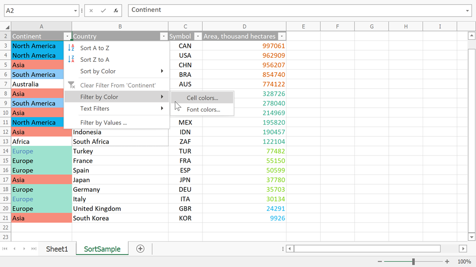
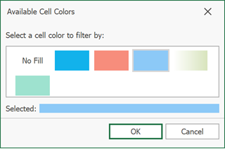

Filter Data
The Spreadsheet allows you to use the AutoFilter to arrange large amounts of data by displaying only rows that meet the filtering criteria.
To enable the filtering functionality, select the required data, and on the Data tab, in the Sort & Filter group, click the Filter button.

Once filtering is activated, a drop-down arrow  appears on the right side of each column header in the range. Depending on the data in the column you wish to filter, you can apply one of the following filters: Filter by Values, Text Filter, Number Filter or Date Filter.
appears on the right side of each column header in the range. Depending on the data in the column you wish to filter, you can apply one of the following filters: Filter by Values, Text Filter, Number Filter or Date Filter.
Note
You can filter your data by multiple columns. Filters are additive: each new filter is applied in addition to the existing filters and further reduces your data.
Filter by Values
To filter your data by a list of values, do the following.
Click the arrow
in the header of the column containing the values you wish to filter.In the drop-down menu, select the Filter by Values item to invoke the AutoFilter dialog.

The AutoFilter dialog displays a list of all values in the selected column. Click the Uncheck All button to deselect the values. Then, select the check boxes for the items you wish to display, and click OK.

Text Filter
To apply the text filter, do the following.
Click the arrow
in the header of the column containing text values you wish to filter.Point to Text Filters and select one of the built-in comparison operators, or select Custom Filter to construct your own filter expression.

In the invoked Custom AutoFilter dialog specify the filter criterion.

You can also specify the additional filter criterion using the AND or OR logical operator to combine the conditions.
To make your filter criterion more flexible, use the wildcard characters. The asterisk * matches any number of characters, while the question mark ? stands for a single character. For example, to display all the values that start with the letter "C", you can either use the Begins With operator as shown in the image above, or select the Equals operator and type "C*" in the box on the right.
Tip
To filter values containing a specific character, such as the asterisk, question mark or tilde, put the tilde (~) before it.
Number Filter
To apply the number filter, do the following.
Click the arrow
in the header of the column containing numeric values you wish to filter.Point to Number Filters and select one of the built-in comparison operators (Equals, Greater Than, Less Than, Between, Top 10, Above or Below Average, etc.), or select Custom Filter to construct your own filter expression.

In the invoked Custom AutoFilter dialog specify the filter criterion.

You can also specify the additional filter criterion using the AND or OR logical operator to combine the conditions.
Date and Time Filter
To apply the date filter, do the following.
Click the arrow
in the header of the column containing dates you wish to filter.Point to Date Filters and select one of the built-in dynamic filter types to display dates that fall within a specified time period (next, this or last week, month, year, etc.).

Alternatively, select the Before, After, Equals or Between item to invoke the Custom AutoFilter dialog. Find dates that are before, after or equal to the specified date, or between two dates.

Color Filter
If cells in the selected column use different styles, the Filter by Color option is available.
- Click the arrow in the header of the column containing dates you wish to filter.
- Choose Cell colors… to apply a background color or pattern filter, and Font colors… to apply a font filter. 
- When you select the required option, a dialog with available colors appears. Select the target color and click OK. 
Reapply a Filter
To reapply a filter after you change your data, do the following:
- Click a cell in the range or table to which the filter is applied.
- On the Data tab, in the Sort & Filter group, click the Reapply button.

Clear a Filter
You can remove a filter from a column or remove all filters.
To remove a filter from a specific column, click the Filter button  in the column header, and then select the Clear Filter From 'Column Name' item in the drop-down menu.
in the column header, and then select the Clear Filter From 'Column Name' item in the drop-down menu.

To clear all the specified filters and display the hidden rows, on the Data tab, in the Sort & Filter group, click the Clear button.

To disable the filtering functionality, click a cell in the range or table, and then on the Data tab, in the Sort & Filter group, click the Filter button. The drop-down arrows disappear from the column headers and all the specified filters are removed.